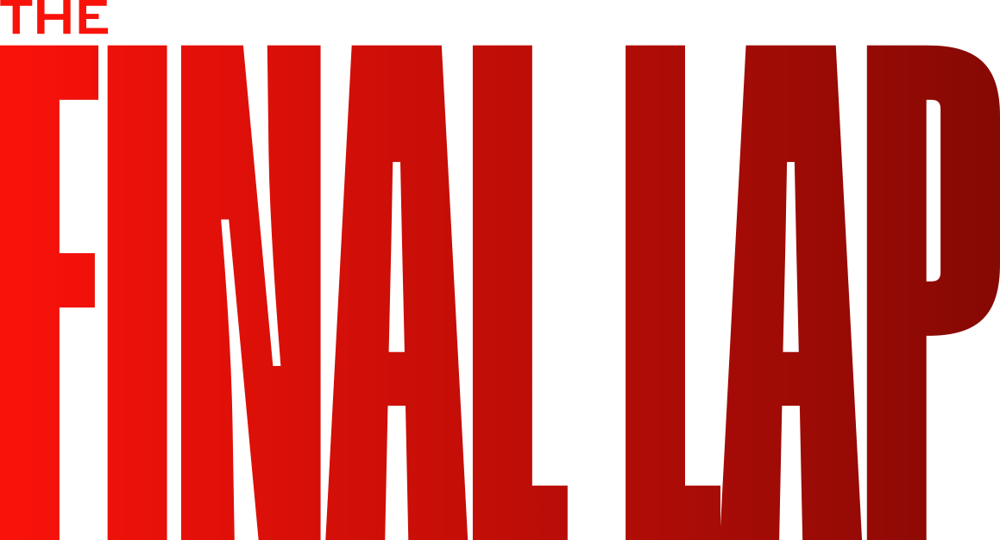
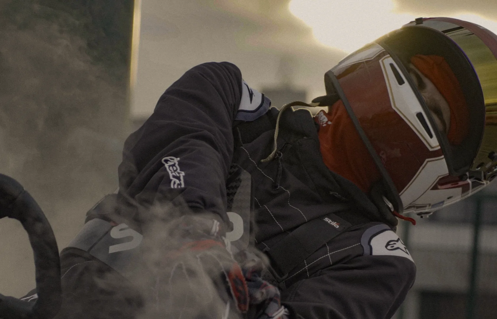
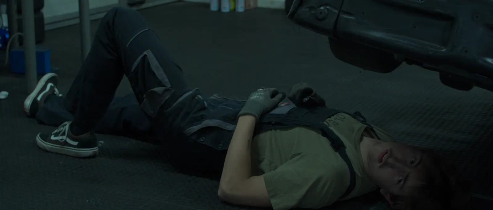
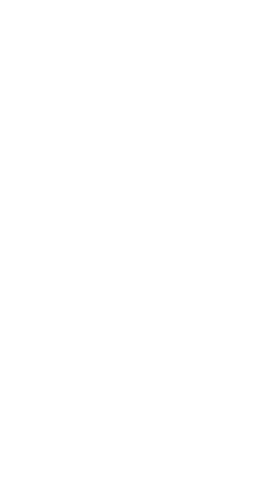

Prvý slovenský motokárový film
Na návrat potrebuješ viac než rýchlosť.Bývalý pretekár sa pokúša vrátiť na vrchol motokárového sveta. Krátkometrážny hraný film o odvahe postaviť sa znovu na štart.

Posledné kolo.
Nový začiatok.
Kedysi pretekal o víťazstvo. Teraz bojuje o cestu späť.
The Final Lap sleduje vnútorný boj bývalého pretekára, ktorý sa pokúša vrátiť na vrchol motokárového sveta. Na ceste ho čakajú strata, prekážky aj súperenie. Predovšetkým však musí nájsť odvahu opäť sa postaviť na štart.
Krátkometrážny film spája energiu slovenského motoršportu s nadšením mladých filmárov. V autentickom prostredí motokárovej haly MAX60 vznikol príbeh, za ktorým stoja ľudia odhodlaní premeniť spoločný nápad na film.
- Formát
- Krátkometrážny hraný film
- Krajina
- Slovensko
- Prostredie
- Motokárový šport
- Uvedenie
- Premiéra sa pripravuje

Na trati rozhodujú sekundy. V živote odvaha skúsiť to znova.
Pred kamerou
aj za ňou.
Herci, filmári a pretekári. Ľudia s rôznymi skúsenosťami, ktorých spojil jeden príbeh. Kliknite na kartu a otvorí sa medailón.
Za každým záberom stojí celý tím: 22 položiek štábu a 15 hereckých úloh.
Celý štáb a obsadenieBližšie
k trati.
Ticho pred štartom, napätie medzi súpermi a chvíle, keď kamera ešte beží.

Behind
the camera
Kliknutím fotografiu zväčšíte. Listovať môžete šípkami alebo potiahnutím prsta.
Aj vďaka vám sme na trati.
Verili ste nášmu filmu ešte pred prvým premietaním. Na StartLabe ste nám pomohli prekonať pôvodný cieľ a posunúť The Final Lap bližšie k divákom.
Ďakujeme každému, kto prispel, zdieľal náš príbeh alebo nám držal palce.
- vyzbierali sme spolu
- 1 370 €
- pôvodného cieľa 700 €
- 196 %
- podporovateľov kampane
- 27
Spolu až
do cieľa.
Partneri, ktorí sa stali súčasťou The Final Lap. Ďakujeme za podporu a spoluprácu.
Uvidíme sa
pri filme.
Film zatiaľ nebol uvedený. Termín premiéry oznámime, keď bude potvrdený.